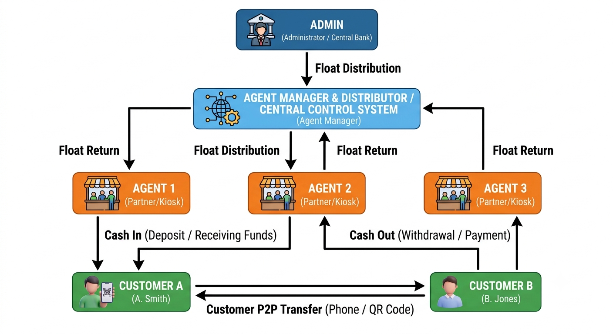

FINAL YEAR PROJECT
Digital Wallet
Management System
A hierarchical mobile & web platform for secure digital payments,
float management, and KYC verification in Myanmar
Presented by: Khun Si Thu | July 2026
Presentation Outline
- Project Description
- Motivation of the Project
- Project Objectives
- Background Technology
- DB Design — ERD & Schema
- Use Case Diagram
- Flow Diagram of the System
- Project Implementation
- Conclusion
- References
1. Project Description
Introduction
The Digital Wallet Management System (DWMS) is a full-stack financial platform that enables secure digital money transfers, agent-based cash services, and hierarchical float distribution across four user roles: Admin, Agent Manager, Agent, and Customer.
Scope
- REST API backend with role-based access control
- Customer & Agent mobile apps (React Native / Expo)
- Admin web dashboard for system oversight
- SMS OTP authentication microservice
- KYC verification via NRC document upload
- QR-based payments & P2P transfers
Problem Statement
Traditional cash-based economies lack accessible, secure, and traceable digital payment infrastructure — especially in regions where bank account penetration is low. Agents need a reliable float management system, customers need easy P2P transfers, and administrators require centralized oversight of wallets, KYC, and transactions.
2. Motivation of the Project
- Cash dependency — Many users rely on cash agents; a digital wallet bridges the gap between physical cash and electronic money.
- Financial inclusion — Phone-based registration (OTP + PIN) lowers the barrier to entry compared to traditional banking.
- Agent network scalability — A hierarchical float model (Admin → Manager → Agent → Customer) mirrors real-world cash distribution networks.
- Regulatory compliance — Built-in KYC/NRC verification ensures identity checks before high-value transactions.
- Transaction transparency — Every transfer generates a unique receipt with full audit trail.
- Local context — Bilingual UI (English / Myanmar), region & township management tailored for Myanmar.
3. Project Objectives
- Design a secure authentication system using OTP + 4-digit PIN
- Implement a hierarchical wallet architecture with four distinct roles
- Enable P2P money transfers via phone, wallet number, or QR scan
- Build agent cash-in/cash-out services for customers
- Develop an admin dashboard for KYC review, user management, and analytics
- Support float distribution & return across the agent hierarchy
- Provide real-time balance updates with in-app notifications
- Generate transaction receipts with save & share functionality
- Ensure role-based API security via Laravel Sanctum tokens
- Deploy a production-ready system on cloud platforms (Render, Vercel, EAS)
4. Background Technology
Backend API
Laravel 13 · PHP 8.3
Sanctum Auth · PostgreSQL
Deployed on Render.com
Customer Mobile App
React Native · Expo 57
TypeScript · NativeWind 4
Expo Router · Secure Store
Agent Mobile App
React Native · Expo 57
TypeScript · OTA Updates
Role Guard · QR Scanner
Admin Dashboard
React 19 · Vite 8
TailwindCSS 4 · shadcn/ui
Zustand · Recharts · Vercel
OTP Engine
Spring Boot 3.2 · Java 17
6-digit OTP · 5-min expiry
Infinireach SMS Gateway
Security
bcrypt PIN hashing
Sanctum Bearer tokens
Role middleware · HTTPS
System Architecture
Admin
Web Dashboard
→
Agent Manager
Web Dashboard
→
Agent
Mobile App
→
Customer
Mobile App
Float flows top-down · Returns flow bottom-up · Customers perform P2P & QR payments

5. DB Design — Entity-Relationship Diagram
┌─────────┐ ┌──────────────┐ ┌───────────┐
│ roles │──┐ │ state_regions│──┐ │ townships │
└─────────┘ │ └──────────────┘ │ └───────────┘
│ │
▼ ▼
┌─────────┐ ┌──────────────────┐ ┌─────────────────────┐
│ users │───▶│ customer_profiles│ │ agent_profiles │
└────┬────┘ └──────────────────┘ └─────────────────────┘
│ ┌──────────────────────┐
├─────────▶│ agent_manager_profiles│
│ └──────────────────────┘
│
┌────────┼────────┬──────────────┬─────────────────┐
▼ ▼ ▼ ▼ ▼
┌────────┐ ┌─────┐ ┌─────────┐ ┌──────────────┐ ┌───────────────┐
│ wallets│ │ pins│ │ qr_codes│ │ transactions │ │nrc_verifications│
└────────┘ └─────┘ └─────────┘ └──────────────┘ └───────────────┘
│
▼
┌──────────────────┐
│ otp_verifications│
└──────────────────┘
14 core tables · Role-based profiles · Wallet-centric transaction model
5. DB Design — Schema Design
| Table |
Purpose |
Key Fields |
| users | Core account records | phone_number, role_id, nrc_number, status |
| wallets | Balance tracking | wallet_number, balance, status |
| transactions | Transfer history | sender/receiver wallet, type, amount, fee |
| pins | Security | pin_hash (bcrypt), failed_attempts, is_locked |
| otp_verifications | Auth | otp_code, purpose, expires_at, status |
| customer_profiles | Customer data | kyc_status, referral_code, region |
| agent_profiles | Agent data | agent_code, shop_name, created_by_manager |
| nrc_verifications | KYC workflow | status, rejection_reason, verified_by |
| qr_codes | QR payments | qr_code_value, wallet_id, is_active |
6. Use Case Diagram
Admin
- Manage Agent Managers
- Review KYC & NRC documents
- Transfer treasury float
- Audit transactions & wallets
- Manage locations (regions/townships)
Agent Manager
- Create & manage agents
- Distribute float to agents
- Receive float returns
- Return float to admin
- View agent wallets & logs
Agent
- Authenticate (OTP + PIN)
- Cash In to customers
- Receive QR payments
- Return float to manager
- Submit NRC documents
Customer
- Send money (phone/wallet/QR)
- Receive money via QR
- Submit KYC verification
- View wallet & transactions
- Manage profile & preferences
All money transfers include <<include>> PIN verification
7. Flow Diagram — Money & Float Flow
┌─────────────────────────────────────────────────────────┐
│ FLOAT DISTRIBUTION (Top-Down) │
└─────────────────────────────────────────────────────────┘
Admin ──[Distribute Float]──▶ Agent Manager
│
▼
Agent ──[Cash In]──▶ Customer
┌─────────────────────────────────────────────────────────┐
│ FLOAT RETURN (Bottom-Up) │
└─────────────────────────────────────────────────────────┘
Agent ──[Return Float]──▶ Agent Manager ──[Return]──▶ Admin
┌─────────────────────────────────────────────────────────┐
│ CUSTOMER TRANSFERS │
└─────────────────────────────────────────────────────────┘
Customer ◀──P2P Transfer──▶ Customer
Customer ──[QR Payment]──▶ Agent
7. Flow Diagram — Authentication
Customer / Agent / Admin / Manager
│
▼
┌───────────────────────┐
│ Enter Phone Number │
└───────────┬───────────┘
▼
┌───────────────────────┐
│ Receive 6-digit OTP │──── SMS via Infinireach Gateway
│ (expires in 5 min) │
└───────────┬───────────┘
▼
┌──────┴──────┐
│ New User? │
└──┬───────┬──┘
Yes │ │ No
▼ ▼
Create PIN Verify PIN
(4 digits) (4 digits)
│ │
└───────┘
▼
┌───────────────────────┐
│ Issue Sanctum Token │──── Stored in Secure Store (mobile)
└───────────────────────┘
8. Project Implementation
Backend API
Laravel 13 REST API with 40+ endpoints
Role middleware, wallet transfers, KYC APIs
PostgreSQL (prod) · SQLite (dev)
Customer App
Send money · QR receive · KYC submit
Bilingual (EN/MY) · Dark/Light theme
Receipt save & share · Real-time balance
Agent App
Cash In · Return Float · QR display
Role guard · OTA updates
Transaction history & notifications
Admin Dashboard
User CRUD · KYC review · Float transfer
Analytics charts · Location management
Wallet status toggles · Transaction audit
8. Project Implementation — Transaction Types
| Type | Sender | Receiver | API Endpoint |
|---|
| admin_to_agent_manager | Admin | Agent Manager | /transfers/admin |
| agent_manager_to_agent | Agent Manager | Agent | /transfers/manager |
| agent_to_customer | Agent | Customer | /transfers/agent |
| agent_to_agent_manager | Agent | Agent Manager | /transfers/agent |
| customer_to_customer | Customer | Customer | /transfers/customer |
| customer_to_agent | Customer | Agent | /transfers/customer |
Each transaction generates a unique receipt (e.g. TXPYEY552MKNBO)
9. Conclusion
- Successfully built a complete digital wallet ecosystem with 5 integrated sub-projects.
- Implemented secure OTP + PIN authentication with role-based access across all platforms.
- Designed a hierarchical float management model mirroring real-world agent networks.
- Delivered mobile-first UX with QR payments, real-time notifications, and bilingual support.
- Established KYC compliance workflow with admin review and document verification.
- Deployed to production on Render, Vercel, and EAS — ready for real-world use.
Future work: iOS release, transaction limits, push notifications, and payment gateway integration.
Thank You
Questions & Discussion
Digital Wallet Management System · 2026